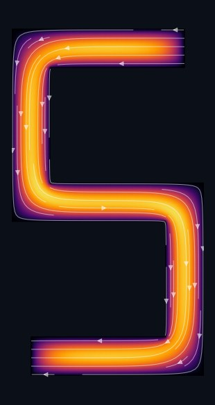
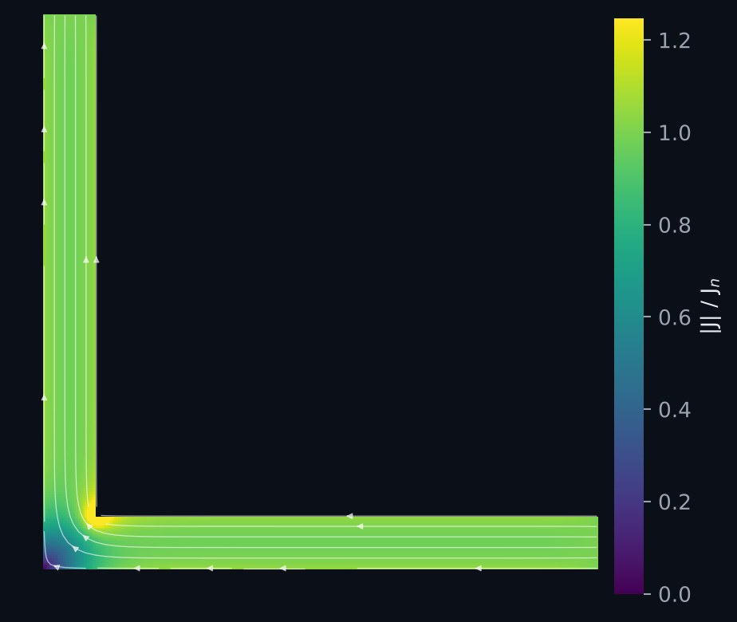
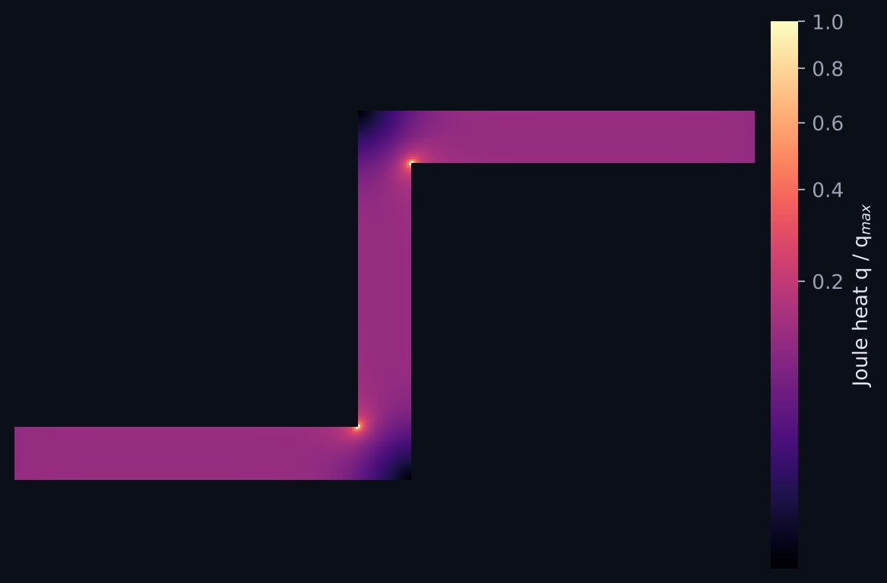
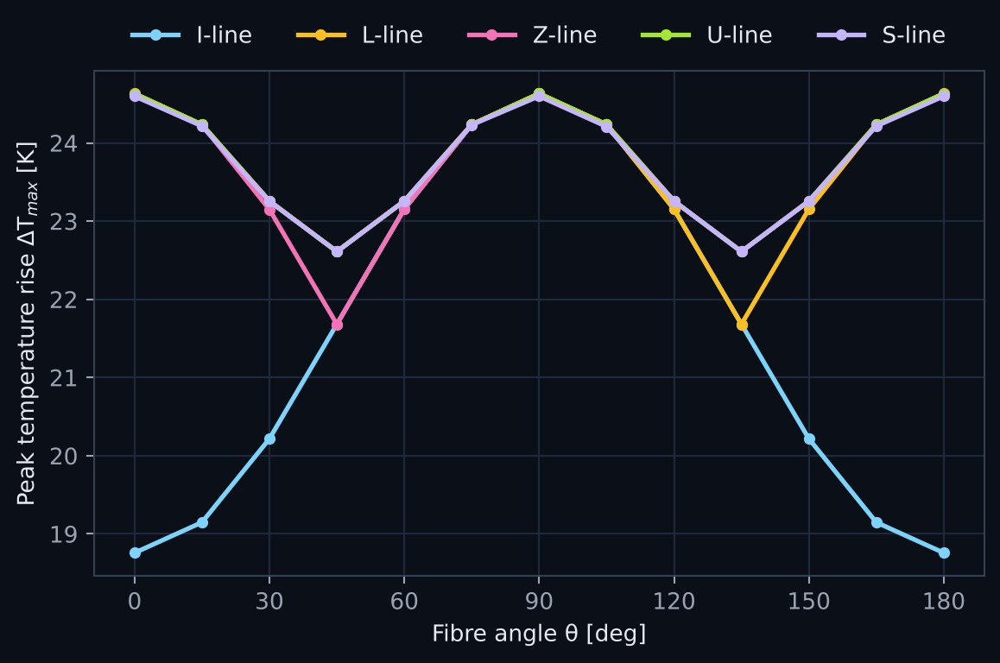

Project 01 · Electrothermal
Multiphysics Modeling of Composites
Coupled current flow and Joule heating in angled SiC/Cu composite conductors
When a conductor is made of a metal matrix reinforced with ceramic fibres, its electrical and thermal conductivities are no longer the same in every direction. Tilt the fibres and the conductivity becomes a full tensor, so current no longer flows straight down the strip and heat no longer spreads evenly.
I solve the two fields together: charge conservation for the electric potential, and heat conduction with the Joule heat it produces as the source. Both conductivities depend on temperature, so the solver iterates between the two problems until they agree. The study runs through five conductor shapes of increasing corner complexity (I, L, Z, U and S lines), sweeping fibre angle and fibre volume fraction.
The re-entrant corners are the hard part numerically. Current crowds there sharply, so the boundary stencils need special treatment at each corner orientation, and the finite-difference results are checked against an independent finite-element model that shares no code with it.
- Physics
- ∇·(σ∇V) = 0 coupled to ∇·(κ∇T) + qJ = losses, with σ(T), κ(T) as rotated tensors
- Material
- SiC fibres in a copper matrix, fibre angle θ from 0° to 180°, volume fraction vf
- Shapes
- I, L, Z, U, S lines; 5 mm limb width, equal 500 mm² planform
- Numerics
- Finite differences with dedicated re-entrant corner stencils; Q4 finite elements as an independent check
- Code
- MATLAB and Python (NumPy, SciPy sparse, Numba)

Temperature rise ΔT, 0 to 25 K on a common scale · white lines follow the current


The corner that carries the most crowded current is not the hottest place in the conductor. Conduction smooths a sharp, local heat source, so the peak temperature settles along the limbs instead, and the corner geometry matters more than how many corners there are.
